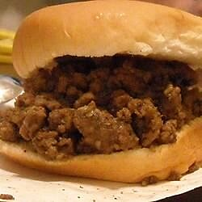

Loose Meat on a Bun, Restaurant Style

Decription
This is how they make loose meat sandwiches in the restaurants. They are always moist and savory.
- 3 pounds ground beef
- ¼ cup minced onion
- 3 tablespoons Worcestershire sauce
- 4 cups beef broth
- 1 teaspoon salt
- 1 teaspoon ground black pepper
- 2 teaspoons butter
- 12 hamburger buns, split